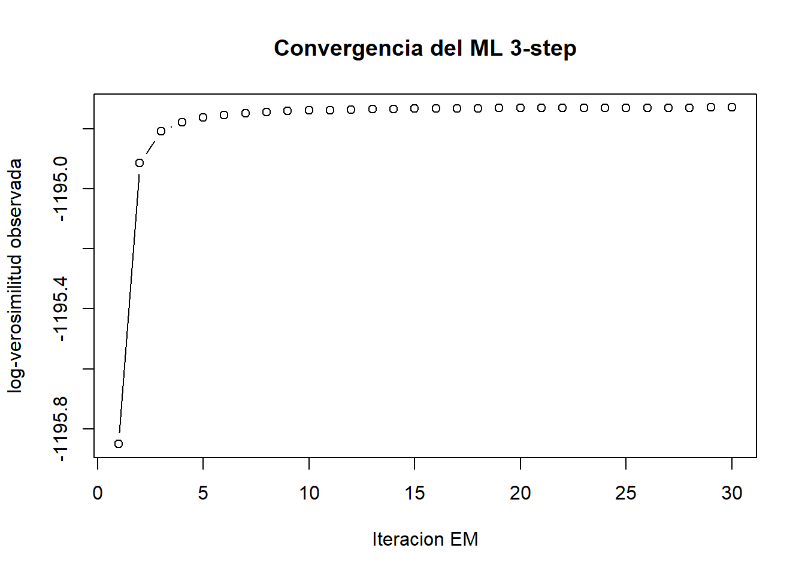
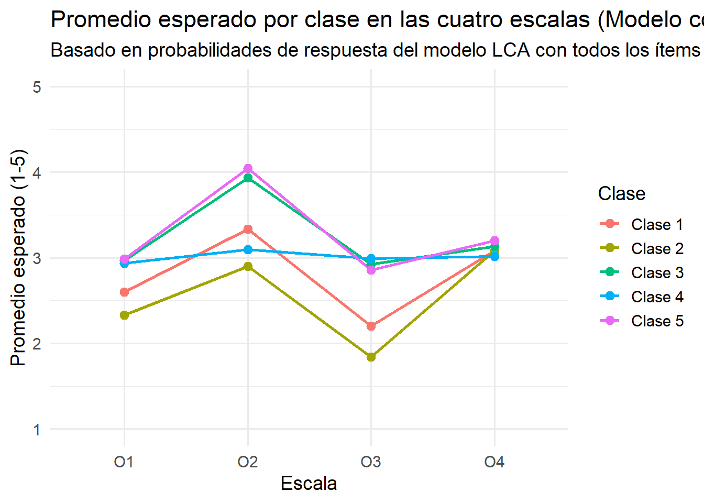

The following objects are masked from 'package:stats':
filter, lag
The following objects are masked from 'package:base':
intersect, setdiff, setequal, union
options(scipen =999)
El analisis de clases latentes es un algoritmo de modelado probabilistico que permite identificar subgrupos de individuos dentro de una población, basándose en sus respuestas a un conjunto de variables observadas. Este enfoque es útil para descubrir patrones ocultos y segmentar la población en clases homogéneas.
La idea principal aca es que las respuestas observadas se explican por la pertenencia a un perfil o clase latente, que no es directamente observable.
project_root <-if (file.exists(file.path("input", "data", "proc", "lca_data.rds"))) {"."} elseif (file.exists(file.path("..", "input", "data", "proc", "lca_data.rds"))) {".."} else {stop("No se encontró input/data/proc/lca_data.rds desde el directorio de renderizado.")}output_root <-file.path(project_root, "output")models_dir <-file.path(output_root, "models")tables_dir <-file.path(output_root, "tables")graphs_dir <-file.path(output_root, "graphs")data_lca <-readRDS(file.path( project_root, "input", "data", "proc", "lca_data.rds"))colnames(data_lca)
# Forzar codificación como entero (por si vienen como factor/character)subset_lca <- subset_lca %>%mutate(across(everything(), ~as.integer(as.numeric(as.character(.)))))lca_rows <-complete.cases(subset_lca)# Revisar missing (poLCA hace listwise deletion por defecto)colSums(is.na(subset_lca))
El gráfico muestra el promedio esperado de cada clase en las cuatro escalas usadas en el modelo (O1: consumo global/digital, O2: hábitos cotidianos, O3: activismo/consumo ético, O4: actitudes hacia el reciclaje, todas en escala 1-5). Antes de interpretar, una aclaración técnica importante:
Nota sobre la codificación. En el cuestionario, los bloques O1-O3 usan escala de frecuencia normal (1=Nunca … 5=Siempre), pero el bloque O4 está codificado al revés (1=Muy de acuerdo … 5=Muy en desacuerdo). Para que las cuatro escalas fueran comparables en el gráfico, invertí O4 (score = 6 − valor original), de modo que en todas las escalas “más alto” significa “más” del comportamiento o actitud positiva. Si tu output de R usó los valores crudos de O4, ten esto en cuenta al leerlo directamente.
Con esa base, aquí está el perfil de cada clase:
Clase Tamaño Perfil Nombre sugerido 1 34.9% Nivel bajo-medio en casi todo, sin rasgos extremos Consumidores convencionales / desimplicados 2 17.7% El más bajo en las 4 dimensiones, sin excepción Desconectados / pasivos 3 19.4% Alto en hábitos cotidianos y compra “verde” individual Consumidores verdes individuales 4 6.7% Único con activismo colectivo alto; escéptico del reciclaje individual Ciudadanos-consumidores críticos/activistas 5 21.3% El más consistente y alto en hábitos + actitudes de reciclaje Consumidores responsables ejemplares
Clase 1 — Convencionales (35%, la más grande). Es el grupo base: ligeramente por debajo del promedio en casi todo, sin ningún ítem que se dispare hacia arriba o hacia abajo. No compran mucho fuera del país, no viajan tanto en avión, tienen hábitos ambientales cotidianos moderados y casi no participan en activismo de consumo (O3.5 Sernac, O3.8 asociaciones, O3.9 marchas, todos bajos). Es el “consumidor promedio”, sin una identidad de consumo marcada.
Clase 2 — Desconectados (18%). Es la clase más baja en absolutamente todo: menos compras internacionales, menos uso de apps de delivery, menos hábitos de ahorro energético/reciclaje, y el nivel más bajo de activismo de todas las clases (O3.1 a O3.9). En las actitudes (O4) son quienes más de acuerdo están con que “no tengo tiempo para reciclar” y que “es mejor comprar algo nuevo que reparar” — o sea, ven el consumo responsable como una carga individual más que como algo que practican.
Clase 3 — Verdes individuales (19%). Se distinguen por hábitos cotidianos muy altos (O2: ahorro de energía y agua, separación de basura, lectura de etiquetas, compra de productos orgánicos/reciclados) y por comprar/dejar de comprar productos específicamente por su impacto ambiental (O3.1 y O3.4, ambos altos). Tienen actitudes muy favorables hacia el reciclaje y poco escepticismo (O4.7 bajo). Pero, igual que las clases 1 y 2, casi no participan en acción colectiva (asociaciones, marchas, Sernac). Es un perfil de “ambientalismo de consumidor individual”.
Clase 4 — Críticos/activistas (7%, la más pequeña pero la más distintiva). Es la única clase que se activa en el bloque O3 de acción colectiva: participación en asociaciones de consumidores (O3.8, muy por encima de las demás clases), marchas y movilizaciones (O3.9), reclamos formales en el Sernac (O3.5) y uso de redes sociales para promover consumo ético (O3.3). A la vez, son altos consumidores globales/digitales (Amazon, viajes en avión, apps de delivery) y tienen los hábitos cotidianos de reciclaje más bajos junto con más escepticismo sobre si reciclar realmente sirve (O4.7) y menor acuerdo con que “es necesario hacerse cargo del reciclaje” (O4.1). El patrón sugiere que priorizan el cambio estructural/colectivo por sobre la acción individual cotidiana — casi lo opuesto a la Clase 3.
Clase 5 — Responsables ejemplares (21%). Son el techo en hábitos cotidianos (O2): ahorro de agua y luz, duchas cortas, separación de basura, planificación de compras, lectura de etiquetas — todos con los valores más altos del estudio. También tienen las actitudes más favorables hacia el reciclaje (O4.1, O4.6, O4.8) y son quienes más se declaran “más ciudadano que consumidor” (O4.12). A nivel de comportamiento de compra son prácticos y ahorrativos: compran ropa de segunda mano, reparan en vez de comprar nuevo, hacen presupuesto mensual, reclaman en el punto de venta y prefieren negocios pequeños. Igual que las clases 1, 2 y 3, su compromiso es individual, no colectivo/asociativo.
El hallazgo transversal más interesante: el activismo colectivo (bloque O3: asociaciones, Sernac, marchas) está prácticamente desacoplado de los hábitos cotidianos y actitudes (O2/O4). Solo la Clase 4 —la más pequeña, 7%— combina ambas cosas, y lo hace mostrando escepticismo hacia el reciclaje individual. Las clases con mejores hábitos diarios (3 y 5, sumando 41% de la muestra) casi no se involucran en acción colectiva. Esto calza con preguntas del cuestionario como A1 (soluciones a problemas ambientales: “consumir menos” vs. “organizarnos como ciudadanos” vs. “el Estado debe presionar a las empresas”) — sería interesante cruzar esa variable con las clases para confirmar el patrón.
Lo que nos interesa aca es cruzar el modelo de clasificacion con variables exogenas. El enfoque tradicional abogaba por incluir las variables exogenas dentro del modelo de clasificacion; pero la bibliografia reciente sugiere que es mejor estimar el modelo de clasificacion y luego cruzarlo con las variables exogenas. Para esto se utiliza el enfoque de tres pasos.
Ya teniendo el modelo de clasificacion; siguiendo el enfoque de tres pasos corresponde estimar la matriz de error de clasificacion. Similar al estadistico de entropia, la matriz nos permite evaluar la calidad de la clasificacion y el grado de incertidumbre en la asignacion de clases.
nclass <-length(modelo_final$P)post <- modelo_final$posterior # matriz N x K de probabilidades posterioresmodal <- modelo_final$predclass # asignación modal (ya guardada como data_lca$clase)# Matriz D: D[k,] = probabilidad promedio hacia cada clase "verdadera"# entre quienes fueron asignados modalmente a la clase kD <-matrix(NA, nclass, nclass)for (k in1:nclass) { idx_k <-which(modal == k) D[k, ] <-colMeans(post[idx_k, , drop =FALSE])}rownames(D) <-colnames(D) <-paste0("Clase", 1:nclass)D # diagonal alta = buena clasificación
Esta matriz se interpreta mirando la diagonal. Los valores mediocres son considerados aquellos que bordan el 0.6. En este caso, tenemos todos .93 y .98; lo que nos indica una buena confiabilidad en la clasificacion de individuos. Aquello se condice con el estadistico de entropia del modelo, que es mayor a 0.8, lo que indica una buena certeza del algoritmo para clasificar a los individuos en las diferentes clases.
El paso siguiente es hacer el cruce con las variables sociodeomograficas que nos interesan. Tendremos en cuenta variables como edad, genero, nivel educacional, ingreso y clase.
library(nnet)# =============================================================# PASO 3 (metodo ML) via "pseudo-class draws"# Referencia: Wang, Brown & Bandeen-Roche (2005); revisado en# Vermunt (2010) y Vermunt & Magidson (varios trabajos) como# alternativa a R3STEP/ML cuando no se dispone de Mplus.## Requiere: modelo_final (objeto poLCA) y data_lca con las# covariables sociodemograficas ya en data_lca.# =============================================================# -------------------------------------------------------------# 0) Chequeos previos# -------------------------------------------------------------n_class <-length(modelo_final$P)post <- modelo_final$posterior # N x K, probabilidades posterioresdf <- data_lca[lca_rows, , drop =FALSE]stopifnot(nrow(post) ==nrow(df)) # deben calzar fila a fila# -------------------------------------------------------------# 1) Preparacion de las covariables sociodemograficas# OJO: los codigos numericos (1,2,3...) asumen que data_lca# trae los valores crudos del cuestionario. Si en tu base ya# vienen como texto/factor, ajusta o elimina el relabeling.# -------------------------------------------------------------## EDAD: ya es continua en tu base -> se deja tal cual (numerica)df$EDAD <-as.numeric(df$EDAD)## NSE: ordinal, AB (mas alto) a E (mas bajo)df$NSE <-factor(df$NSE, levels =1:7,labels =c("AB","C1a","C1b","C2","C3","D","E"),ordered =TRUE)## ZONA: 16 regiones -> colapsar a macrozonas (ajusta los limites si prefieres otra agrupacion)macrozona_map <-c(`1`="Norte grande", `2`="Norte grande", `15`="Norte grande",`3`="Norte chico", `4`="Norte chico",`5`="Centro", `6`="Centro", `7`="Centro", `13`="Centro",`8`="Sur", `9`="Sur", `10`="Sur", `14`="Sur", `16`="Sur",`11`="Austral", `12`="Austral")df$ZONA <-factor(macrozona_map[as.character(df$ZONA)],levels =c("Norte grande","Norte chico","Centro","Sur","Austral"))## E4 (ahorros): 1-6 ordinal + codigo 90 = "Prefiero no responder"## Se deja como nominal (no ordered) para poder agregar la categoria## "No responde" sin romper el orden logico de las demas.e4_labels <-c("Sin ahorro","<1 millon","1-5 millones","5-10 millones","10-20 millones",">20 millones")df$E4 <-ifelse(df$E4 ==90, "No responde", e4_labels[df$E4])df$E4 <-factor(df$E4, levels =c(e4_labels, "No responde"))## M4 (nivel educacional): ordinal 1-10, sin codigos especiales reportadosdf$M4 <-factor(df$M4, levels =1:10, ordered =TRUE)## M7 (ocupacion): nominal, se deja el codigo 98 ("otros no identificados")## como categoria valida -- es heterogenea, pero no es un missing.df$M7 <-factor(df$M7)## M9 (autoubicacion politica 1-10): continua, se deja numericadf$M9 <-as.numeric(df$M9)## M14 (gasto mensual en deudas): NA estructural para quienes no## tienen tarjetas/creditos (M13=99). Se recodifica a tramos +## una categoria explicita "Sin deudas/No aplica" en vez de dejarlo## como NA, para no perder esos casos por listwise deletion en multinom.## Si tienes M13 en data_lca, usa esa condicion en vez del patron de NA:## sin_deuda <- df$M13 == 99sin_deuda <-is.na(df$M14)m14_tramos <-cut(df$M14,breaks =c(-Inf, 50000, 150000, 300000, 600000, Inf),labels =c("<50k","50-150k","150-300k","300-600k",">600k"))df$M14 <-as.character(m14_tramos)df$M14[sin_deuda] <-"Sin deudas / no aplica"df$M14 <-factor(df$M14, levels =c(levels(m14_tramos), "Sin deudas / no aplica"))vars_cruce <-c("EDAD","NSE","ZONA","E4","M4","M7","M9","M14")# Filtrar casos completos SOLO en las covariables (la clase se redibuja en cada draw)ok <-complete.cases(df[, vars_cruce])cat("Casos completos en covariables:", sum(ok), "de", nrow(df), "\n")
Casos completos en covariables: 888 de 1623
df <- df[ok, ]post <- post[ok, ]modal_ok <- modal[ok]# -------------------------------------------------------------# 2) Muestreo de pseudo-clases (M imputaciones)# -------------------------------------------------------------draw_pseudo_class <-function(post_mat) {apply(post_mat, 1, function(p) sample(seq_along(p), size =1, prob = p))}M <-20# numero de imputaciones (20 es un estandar razonable en la literatura)set.seed(2024) # para reproducibilidadform <-as.formula(paste("clase_draw ~", paste(vars_cruce, collapse =" + ")))fits_coef <-vector("list", M)fits_se <-vector("list", M)for (m inseq_len(M)) { df$clase_draw <-factor(draw_pseudo_class(post)) df$clase_draw <-relevel(df$clase_draw, ref ="1") # Clase 1 (la mas grande) como referencia fit_m <-multinom(form, data = df, trace =FALSE) co <-coef(fit_m) se <-summary(fit_m)$standard.errors# nnet::multinom devuelve un vector (no matriz) cuando solo hay 2 clases;# se fuerza a matriz 1xP para que el pooling funcione igual en ambos casosif (is.null(dim(co))) { co <-matrix(co, nrow =1, dimnames =list(levels(df$clase_draw)[2], names(co))) se <-matrix(se, nrow =1, dimnames =dimnames(co)) } fits_coef[[m]] <- co fits_se[[m]] <- se}
Warning in sqrt(diag(vc)): Se han producido NaNs
Warning in sqrt(diag(vc)): Se han producido NaNs
Warning in sqrt(diag(vc)): Se han producido NaNs
Warning in sqrt(diag(vc)): Se han producido NaNs
Warning in sqrt(diag(vc)): Se han producido NaNs
Warning in sqrt(diag(vc)): Se han producido NaNs
Warning in sqrt(diag(vc)): Se han producido NaNs
Warning in sqrt(diag(vc)): Se han producido NaNs
Warning in sqrt(diag(vc)): Se han producido NaNs
Warning in sqrt(diag(vc)): Se han producido NaNs
Warning in sqrt(diag(vc)): Se han producido NaNs
Warning in sqrt(diag(vc)): Se han producido NaNs
Warning in sqrt(diag(vc)): Se han producido NaNs
Warning in sqrt(diag(vc)): Se han producido NaNs
Warning in sqrt(diag(vc)): Se han producido NaNs
Warning in sqrt(diag(vc)): Se han producido NaNs
Warning in sqrt(diag(vc)): Se han producido NaNs
Warning in sqrt(diag(vc)): Se han producido NaNs
Warning in sqrt(diag(vc)): Se han producido NaNs
# -------------------------------------------------------------# 3) Pooling via reglas de Rubin (Rubin, 1987; Barnard-Rubin, 1999)# -------------------------------------------------------------pool_rubin_matrix <-function(est_list, se_list) { M <-length(est_list) dn <-dimnames(est_list[[1]]) est_arr <-simplify2array(lapply(est_list, as.matrix)) se_arr <-simplify2array(lapply(se_list, as.matrix)) qbar <-apply(est_arr, c(1, 2), mean) # estimador puntual pooled ubar <-apply(se_arr^2, c(1, 2), mean) # varianza intra-imputacion bvar <-apply(est_arr, c(1, 2), var) # varianza entre-imputaciones total_var <- ubar + (1+1/ M) * bvar se_pooled <-sqrt(total_var) r <- (1+1/ M) * bvar / ubar df <- (M -1) * (1+1/ r) ^2# grados de libertad (Barnard-Rubin) z <- qbar / se_pooled p <-2*pt(-abs(z), df = df)dimnames(qbar) <-dimnames(se_pooled) <-dimnames(df) <-dimnames(z) <-dimnames(p) <- dnlist(estimate = qbar, se = se_pooled, df = df, z = z, p = p)}resultado <-pool_rubin_matrix(fits_coef, fits_se)# -------------------------------------------------------------# 4) Tabla resumen ordenada (una fila por clase x predictor)# -------------------------------------------------------------tabla <-as.data.frame(as.table(resultado$estimate))names(tabla) <-c("clase_vs_referencia", "predictor", "coef")tabla$se <-as.vector(resultado$se)tabla$p <-as.vector(resultado$p)tabla$sig <-cut(tabla$p, breaks =c(-Inf, .001, .01, .05, .1, Inf),labels =c("***","**","*",".",""))tabla <- tabla[order(tabla$clase_vs_referencia, tabla$predictor), ]print(tabla, row.names =FALSE)
# tabla$clase_vs_referencia indica el log-odds de pertenecer a esa clase# EN VEZ de la Clase 1 (referencia), asociado a cada predictor.
A continuacion vamos a probar tambien el enfoque de Vermunt (2010) como alternativa al pseudo clases. En esrtricto rigor este es el metodo ideal, pero esta implementaado unicamente en Mplus. Aqui se implementa una version aproximada en R, que segun la documentacion consultada reconoce ciertas limitacioes. Lo que nos interesa aca es utilizarlo como prueba de robustez; si llegamos a resultados similares a partir de ambos enfoques, podemos tener mas confianza en la validez de los hallazgos.
# =============================================================# ML 3-STEP (Vermunt, 2010) via EM — reemplaza el intento de BCH# con pesos negativos, que estaba mal planteado para esta# direccion del analisis (covariables -> clase).# =============================================================stopifnot(exists("D"), exists("modal_ok"), exists("df"), exists("vars_cruce"))K <- n_classX <-model.matrix(as.formula(paste("~", paste(vars_cruce, collapse =" + "))),data = df)p <-ncol(X)# -------------------------------------------------------------# 1) De D (= P(verdadero=l | asignado=k)) derivamos, via Bayes,# P(asignado=k | verdadero=l): la matriz de "emision" que# necesita el EM. Todo esto queda en [0,1], sin pesos negativos.# -------------------------------------------------------------pi_asignado <-as.numeric(table(factor(modal_ok, levels =1:K))) /length(modal_ok)joint <-sweep(D, 1, pi_asignado, "*") # joint[k,l] = P(asignado=k, verdadero=l)marg_verdad <-colSums(joint) # P(verdadero=l)E_mat <-sweep(t(joint), 1, marg_verdad, "/") # E[l,k] = P(asignado=k | verdadero=l)stopifnot(all(abs(rowSums(E_mat) -1) <1e-8)) # cada fila debe sumar 1emission <-t(E_mat[, modal_ok, drop =FALSE]) # N x K: emission[i,l] = P(asignado_i | verdadero=l)# -------------------------------------------------------------# 2) Arranque: ajuste "naive" clasificar-y-analizar, SOLO como# punto de partida del EM (se sabe sesgado, no es el resultado)# -------------------------------------------------------------clase_modal_f <-relevel(factor(modal_ok), ref ="1")form <-as.formula(paste("clase_modal_f ~", paste(vars_cruce, collapse =" + ")))fit0 <- nnet::multinom(form, data = df, trace =FALSE)beta_mat <-rbind(0, coef(fit0)) # K x p, fila 1 = referencia (ceros)softmax_rows <-function(eta) { m <-apply(eta, 1, max) ex <-exp(eta - m) ex /rowSums(ex)}loglik_obs <-function(beta_mat) { P_true <-softmax_rows(X %*%t(beta_mat))sum(log(rowSums(emission * P_true)))}# -------------------------------------------------------------# 3) EM: el E-step da pesos entre 0 y 1 que suman 1 por persona# -> nnet::multinom los acepta sin problema, sin unboundedness.# -------------------------------------------------------------ll_hist <-numeric()maxit_em <-30tol <-1e-5fit_m <- fit0for (it in1:maxit_em) { ll_hist[it] <-loglik_obs(beta_mat)if (it >1&&abs(ll_hist[it] - ll_hist[it -1]) < tol) break# E-step P_true <-softmax_rows(X %*%t(beta_mat)) numer <- emission * P_true post_true <- numer /rowSums(numer)# M-step df_long <- df[rep(seq_len(nrow(df)), each = K), vars_cruce, drop =FALSE] df_long$clase_cand <-relevel(factor(rep(1:K, times =nrow(df))), ref ="1") df_long$peso <-as.vector(t(post_true)) fit_m <- nnet::multinom(as.formula(paste("clase_cand ~", paste(vars_cruce, collapse =" + "))),data = df_long, weights = peso, trace =FALSE, maxit =300) beta_mat <-rbind(0, coef(fit_m))}cat("EM detenido en iteracion", it, "de", maxit_em, "\n")
EM detenido en iteracion 30 de 30
plot(ll_hist[1:it], type ="b", xlab ="Iteracion EM", ylab ="log-verosimilitud observada",main ="Convergencia del ML 3-step")

# -------------------------------------------------------------# 4) Tabla y comparacion con pseudo-clases (mismo formato de antes)# -------------------------------------------------------------tabla_3step <-as.data.frame(as.table(coef(fit_m)))names(tabla_3step) <-c("clase_vs_referencia", "predictor", "coef_3step")tabla_3step$se_3step <-as.vector(summary(fit_m)$standard.errors)
cat("\nCorrelacion entre coeficientes (pseudo-clases vs ML 3-step):",round(cor(comparacion$coef_pseudo, comparacion$coef_3step), 3), "\n")
Correlacion entre coeficientes (pseudo-clases vs ML 3-step): 0.938
Finalmente, se puede observar que los resultados obtenidos a partir del enfoque de pseudo-clases y el enfoque ML 3-step son consistentes, con una alta correlación entre los coeficientes estimados por ambos métodos. Esto refuerza la validez de los hallazgos y sugiere que las relaciones identificadas entre las variables sociodemográficas y la pertenencia a clases latentes son robustas frente a la elección del método de análisis.
Hacemos pruebas de independencia local para evaluar si los ítems son independientes condicionalmente a la clase latente. Esto es importante porque la suposición de independencia local es un supuesto clave en los modelos de clases latentes. Si se viola, puede indicar que hay variables redundantes en las escalas.
# =============================================================# TEST DE INDEPENDENCIA LOCAL via Residuos Bivariados (BVR)# Vermunt & Magidson (Latent GOLD technical guide); adaptado# a mano porque poLCA no lo calcula nativamente.## Requiere: modelo_final (objeto poLCA ya ajustado) y# subset_lca (los datos usados para el ajuste).# =============================================================library(purrr)library(tibble)# -------------------------------------------------------------# 1) Reconstruir los datos EXACTOS usados por poLCA# (poLCA hace listwise deletion internamente con na.rm=TRUE,# asi que hay que igualar filas con el posterior)# -------------------------------------------------------------dat_used <- subset_lca[complete.cases(subset_lca), , drop =FALSE]stopifnot(nrow(dat_used) ==nrow(modelo_final$posterior))K <-length(modelo_final$P)items <-names(modelo_final$probs)N <-nrow(dat_used)# -------------------------------------------------------------# 2) Funcion BVR para un par de items# -------------------------------------------------------------compute_bvr <-function(item_i, item_j) { cat_i <-ncol(modelo_final$probs[[item_i]]) cat_j <-ncol(modelo_final$probs[[item_j]]) obs <-table(factor(dat_used[[item_i]], levels =1:cat_i),factor(dat_used[[item_j]], levels =1:cat_j)) exp_tab <-matrix(0, cat_i, cat_j)for (k in1:K) { p_i <- modelo_final$probs[[item_i]][k, ] p_j <- modelo_final$probs[[item_j]][k, ] exp_tab <- exp_tab + modelo_final$P[k] *outer(p_i, p_j) } exp_tab <- exp_tab * N chi2 <-sum((obs - exp_tab)^2/ exp_tab, na.rm =TRUE) df <- (cat_i -1) * (cat_j -1) chi2 / df}# -------------------------------------------------------------# 3) Calcular BVR para TODOS los pares de los 46 ítems originales# -------------------------------------------------------------pares <-combn(items, 2, simplify =FALSE)bvr_resultados <-map_dfr(pares, function(pr) {tibble(item1 = pr[1], item2 = pr[2],bvr =compute_bvr(pr[1], pr[2]))})bvr_resultados <- bvr_resultados %>%arrange(desc(bvr))cat("Pares con BVR > 3:", sum(bvr_resultados$bvr >3), "de", nrow(bvr_resultados), "\n")
Pares con BVR > 3: 137 de 1035
cat("Pares con BVR > 4:", sum(bvr_resultados$bvr >4), "de", nrow(bvr_resultados), "\n\n")
Según el resultado, dentro de las baterías hay algunos ítems que prácticamente están midiendo lo mismo, pero tienen fraseos diferentes. Estos resultados se conservan como diagnóstico; el modelo principal mantiene los 46 ítems originales y sus soluciones de 1 a 7 clases.
# El análisis principal conserva todos los ítems originales.items_lca_final <- vars_Oformula_depurada <- fmodelos_limpios <- modelos_46ks_limpios <- ksmodelo_final_limpio <- modelos_46[["clases_5"]]estadisticos_ajuste_limpio <- indices_46posterior_limpio <-pmax(modelo_final_limpio$posterior, 1e-12)entropia_limpia <-1-sum(-posterior_limpio *log(posterior_limpio)) / (nrow(posterior_limpio) *log(ncol(posterior_limpio)))estadisticos_modelo_final <- estadisticos_ajuste_limpio[ estadisticos_ajuste_limpio$clases ==5,]print(estadisticos_modelo_final)
Luego de los ajustes, observamosa ver que la solucion de 5 clases sigue siendo la mas conveniente. Volvemos a correr las pruebas de independencia local.
library(dplyr)# 1. Actualizar los objetos globales que requiere tu función compute_bvrmodelo_final <- modelo_final_limpiodat_used <- subset_lca[, items_lca_final, drop =FALSE]dat_used <- dat_used[complete.cases(dat_used), , drop =FALSE]K <-length(modelo_final$P)N <-nrow(dat_used)# 2. Generar todos los pares únicos y aplicar tu funciónpares <-t(combn(items_lca_final, 2))bvr_resultados_limpios <-lapply(1:nrow(pares), function(idx) { i <- pares[idx, 1] j <- pares[idx, 2]data.frame(item1 = i, item2 = j, bvr =round(compute_bvr(i, j), 2))}) %>%bind_rows() %>%arrange(desc(bvr))# 3. Inspeccionar el top 15 de BVR en el modelo completohead(bvr_resultados_limpios, 15)
Tras resolver la redundancia local mediante la eliminación de los 4 ítems duplicados (O4_3, O4_6, O3_4, O1_10), procedemos a graficar la estructura final de los 5 perfiles latentes, calcular su matriz de error de clasificación \(D\) y re-estimar las asociaciones sociodemográficas mediante el enfoque de tres pasos.
1. Visualización de Perfiles (Modelo Depurado)
A diferencia del primer modelo, agrupamos las variables de forma dinámica (grep) por el prefijo de la batería para evitar desfases numéricos por las columnas eliminadas.
# Actualizar referencias con el modelo limpiomodelo_final <- modelo_final_limpion_class <-length(modelo_final$P)lca_rows_clean <-complete.cases(subset_lca[, items_lca_final, drop =FALSE])data_lca$clase_depurada <-NA_integer_data_lca$clase_depurada[lca_rows_clean] <- modelo_final$predclass# 1) Esperanza de la respuesta de cada ítem por claseitem_expected <-lapply(modelo_final$probs, function(m) { cats <-seq_len(ncol(m))rowSums(sweep(m, 2, cats, FUN ="*"))})# 2) Invertir escala de O4 restantes (6 - valor)o4_items <-grep("^O4_", names(item_expected), value =TRUE)for (item in o4_items) { item_expected[[item]] <-6- item_expected[[item]]}# 3) Agrupar dinámicamente por bateríaescala_items <-list(O1 =grep("^O1_", names(item_expected), value =TRUE),O2 =grep("^O2_", names(item_expected), value =TRUE),O3 =grep("^O3_", names(item_expected), value =TRUE),O4 =grep("^O4_", names(item_expected), value =TRUE))# 4) Calcular promedio por clase y escalaplot_df_limpio <-bind_rows(lapply(names(escala_items), function(esc) { idx <- escala_items[[esc]] vals <-vapply(1:n_class, function(c) {mean(vapply(idx, function(item) item_expected[[item]][c], numeric(1))) }, numeric(1)) tibble::tibble(clase =paste0("Clase ", 1:n_class),escala = esc,promedio = vals )}))# 5) Gráfico de perfiles del modelo completografico_clases_limpio <-ggplot(plot_df_limpio, aes(x = escala, y = promedio, group = clase, color = clase)) +geom_line(linewidth =1) +geom_point(size =2.5) +scale_y_continuous(limits =c(1, 5)) +labs(title ="Promedio esperado por clase en las cuatro escalas (Modelo completo - 46 ítems)",subtitle ="Basado en probabilidades de respuesta del modelo LCA con todos los ítems originales",x ="Escala",y ="Promedio esperado (1-5)",color ="Clase" ) +theme_minimal(base_size =14)ggsave(filename =file.path(graphs_dir, "perfiles_clases_46items_5clases.png"),plot = grafico_clases_limpio,width =9,height =6,dpi =300,bg ="white")print(grafico_clases_limpio)

# Tamaños relativos de cada clase (%)porcentajes_limpios <-data.frame(Clase =paste0("Clase ", 1:n_class),`Proporcion (%)`=round(modelo_final_limpio$P *100, 1))print(porcentajes_limpios)
Cuando el modelo contiene muchos indicadores, no conviene interpretar las probabilidades condicionales una por una. Se utilizan tres resúmenes complementarios: perfiles agregados por batería, indicadores que más discriminan entre clases y una visualización global de los perfiles.
for (item innames(modelo_final_limpio$probs)) { probabilidades <- modelo_final_limpio$probs[[item]] resultado <-tryCatch({bind_rows(lapply(seq_len(nrow(probabilidades)), function(clase) {tibble(indicador = item, clase = clase, respuesta =seq_len(ncol(probabilidades)),probabilidad = probabilidades[clase, ]) })) }, error =function(e) {message("Error en item: ", item, " -> ", conditionMessage(e))NULL })}# 2) Puntaje esperado de cada indicador por clase.# O4 se invierte para que un valor alto tenga el mismo sentido sustantivo.esperados_limpios <-bind_rows(lapply(names(modelo_final_limpio$probs), function(item) { probabilidades <- modelo_final_limpio$probs[[item]] valores <-seq_len(ncol(probabilidades)) esperados <-as.vector(probabilidades %*% valores)if (grepl("^O4_", item)) { esperados <-6- esperados }tibble(indicador = item,clase =paste0("Clase ", seq_len(nrow(probabilidades))),esperado = esperados )}))# 3) Ranking de indicadores más discriminantes.# Un rango alto indica mayor separación entre las clases.ranking_indicadores <- esperados_limpios %>%group_by(indicador) %>%summarise(minimo =min(esperado),maximo =max(esperado),rango =max(esperado) -min(esperado),.groups ="drop" ) %>%arrange(desc(rango))cat("Indicadores con mayor diferenciación entre clases:\n")
Indicadores con mayor diferenciación entre clases:
# 4) Heatmap de los puntajes esperados por indicador y clase.heatmap_indicadores <-ggplot(esperados_limpios,aes(x = clase, y =reorder(indicador, esperado), fill = esperado)) +geom_tile(color ="white", linewidth =0.2) +scale_fill_viridis_c(limits =c(1, 5), name ="Esperado") +labs(title ="Perfil de indicadores por clase latente",subtitle ="O4 invertido para mantener la dirección sustantiva de la escala",x =NULL,y ="Indicador" ) +theme_minimal(base_size =11) +theme(panel.grid =element_blank())print(heatmap_indicadores)
La lectura sustantiva debe comenzar por los indicadores con mayor rango entre clases y luego contrastarse con los promedios por batería. Los indicadores con rangos pequeños son poco útiles para diferenciar perfiles, aunque sigan siendo parte del modelo. La matriz de probabilidades condicionales permite revisar qué categorías de respuesta explican cada diferencia observada en el ranking.
ANALISIS DEL CLASES LATENTES A PARTIR DE LOS FACTORES
# =============================================================# PERFILES DE CLASES POR FACTORES (agrupación del Excel_factores)# Usa el modelo completo (modelo_final_limpio, 46 ítems, 5 clases).# =============================================================library(dplyr)library(tidyr)library(ggplot2)# 1) Definición de factores (Factores 1-8 del Excel)factores <-list("F1 Ahorro de energía y agua"=c("O2_1", "O2_2", "O2_3", "O2_4", "O2_5"),"F2 Planificación de compras"=c("O2_8", "O1_10", "O2_9"),"F3 Consumo sustentable y reciclaje"=c("O2_6", "O2_12", "O1_6", "O2_11", "O2_7", "O1_8"),"F4 Activismo colectivo"=c("O3_8", "O3_9", "O3_2", "O3_5", "O3_3"),"F5 Consumo crítico e informado"=c("O3_1", "O3_4", "O3_7"),"F6 Facilidad para reciclar"=c("O4_3", "O4_5", "O4_6", "O4_2"),"F7 Responsabilidad ciudadana"=c("O4_1", "O4_8", "O4_12"),"F8 Escepticismo e individualización"=c("O4_11", "O4_10", "O4_7"))mapa_factores <-tibble(grupo =rep(names(factores), lengths(factores)),indicador =unlist(factores, use.names =FALSE))# 2) Chequeo: ítems de los factores que no están en el modelo completoitems_modelo <-names(modelo_final_limpio$probs)cat("Ítems de factores omitidos (no están en el modelo):",paste(setdiff(mapa_factores$indicador, items_modelo), collapse =", "), "\n")
Ítems de factores omitidos (no están en el modelo):
cat("Ítems del modelo sin factor (no entran al gráfico):",paste(setdiff(items_modelo, mapa_factores$indicador), collapse =", "), "\n\n")
Ítems del modelo sin factor (no entran al gráfico): O1_1, O1_2, O1_3, O1_4, O1_5, O1_7, O1_9, O2_10, O2_13, O2_14, O3_6, O3_10, O4_4, O4_9
# 3) Puntaje esperado por ítem y clase (O4 invertido: más alto = más acuerdo)esperados_items <-bind_rows(lapply(items_modelo, function(item) { pr <- modelo_final_limpio$probs[[item]] e <-as.vector(pr %*%seq_len(ncol(pr)))if (grepl("^O4_", item)) e <-6- etibble(indicador = item, clase =seq_len(nrow(pr)), esperado = e)}))# 4) Promedio por factor y claseetiquetas_clase <-paste0("Clase ", seq_along(modelo_final_limpio$P)," (", round(modelo_final_limpio$P *100, 1), "%)")plot_df_factores <- esperados_items %>%inner_join(mapa_factores, by ="indicador") %>%group_by(grupo, clase) %>%summarise(promedio =mean(esperado), n_items =n(), .groups ="drop") %>%mutate(grupo =factor(grupo, levels =names(factores)),clase =factor(clase, levels =seq_along(etiquetas_clase), labels = etiquetas_clase) )# 5) Tabla resumen (factores en filas, clases en columnas)tabla_factores <- plot_df_factores %>% dplyr::select(-n_items) %>% tidyr::pivot_wider(names_from = clase, values_from = promedio) %>% dplyr::mutate(dplyr::across(where(is.numeric), ~round(., 2)))print(tabla_factores)
# 6) Gráfico de perfiles por factorgrafico_factores <-ggplot(plot_df_factores,aes(x = grupo, y = promedio, group = clase, color = clase)) +geom_vline(xintercept =5.5, linetype ="dashed", color ="grey60") +geom_line(linewidth =1) +geom_point(size =2.5) +scale_y_continuous(limits =c(1, 5)) +scale_x_discrete(labels =function(x) stringr::str_wrap(x, width =14)) +annotate("text", x =3, y =5, label ="Frecuencia de conductas", size =3.5, color ="grey40") +annotate("text", x =7, y =5, label ="Grado de acuerdo", size =3.5, color ="grey40") +labs(title ="Promedio esperado por clase según factores de ítems",subtitle ="Modelo LCA completo (46 ítems, 5 clases). O4 invertido: más alto = más de acuerdo con el enunciado",x =NULL,y ="Promedio esperado (1-5)",color ="Clase (tamaño)" ) +theme_minimal(base_size =13) +theme(axis.text.x =element_text(size =9), legend.position ="bottom")print(grafico_factores)